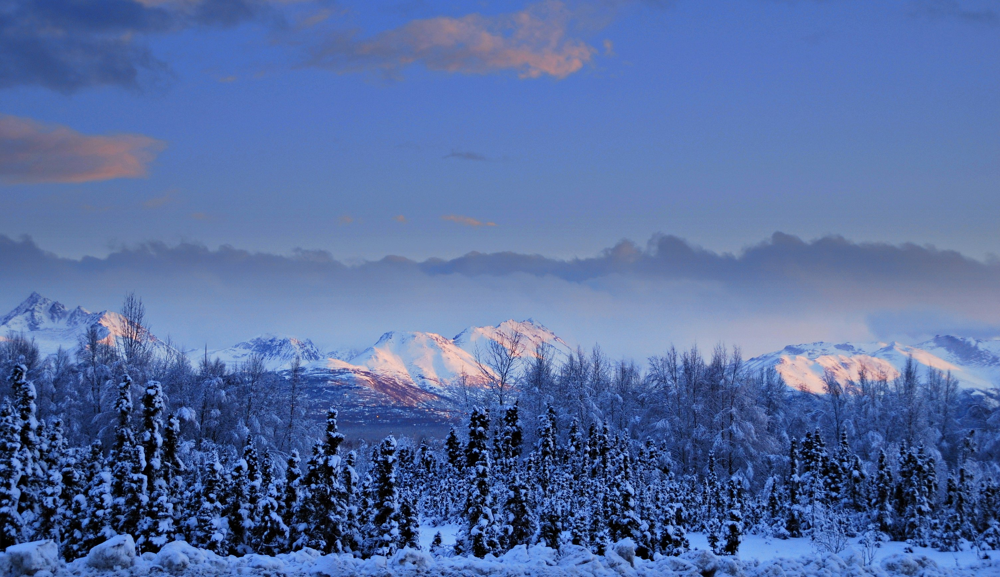

If you’re traveling to Alaska, Anchorage is almost certainly listed somewhere in your itinerary. Yes, despite being the largest city in the state, it can be surprisingly difficult to find things to do in Anchorage. So, if your trip calls for spending a couple of days in the city – like ours did last summer – I hope you’ll find this list of things to do in Anchorage helpful. Fairbanks's adventure, Railroad, The Northern Lights
